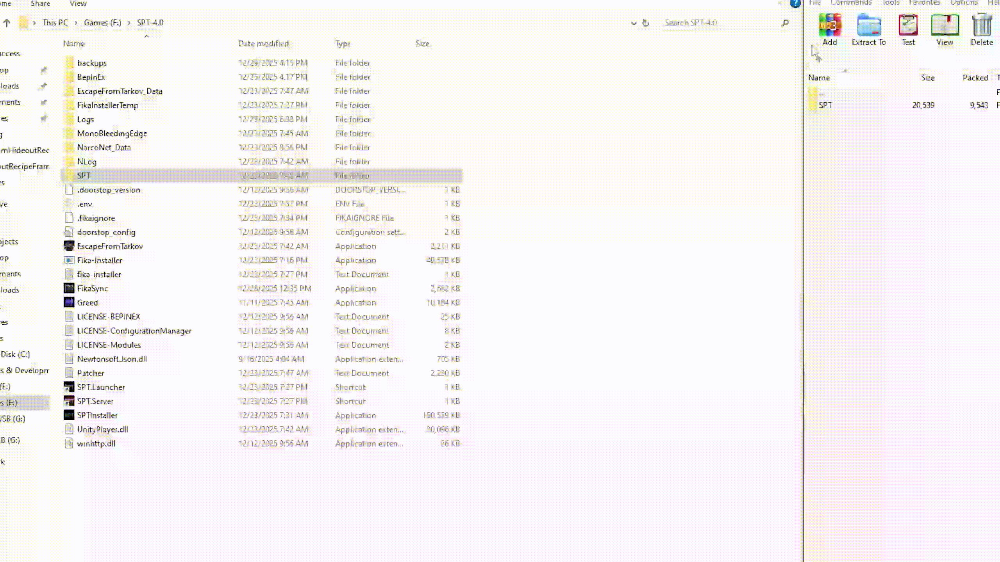

Hideout Recipe Framework
- Downloads
- 1,115
- Favourites
- 4
- Mod lists
- 6
Hideout Recipe Framework
This mod exists to solve one specific problem: adding new hideout crafting recipes without touching THE CITY’s database or writing backend code.
Hideout Recipe Framework lets you define brand new hideout crafts using simple JSON files. On server startup, those recipes are loaded and injected directly into the hideout production system. Nothing is overridden, patched, or written to disk — vanilla content is left alone.
The goal is to make custom recipes easy, readable, and safe to maintain.
What it does
- Adds new hideout recipes at server startup
- Recipes are defined entirely in JSON
- Supports:
- Station + level requirements
- Item inputs (consumed)
- Tool requirements (not consumed)
- Generator fuel requirements
- Uses deterministic IDs so recipes are stable across restarts
What it does not do
- Does not modify or replace vanilla recipes
- Does not edit the database on disk
How it works
At startup, the mod reads all recipe JSON files from the Recipes folder, validates them, converts them into THE CITY’s internal recipe format, and appends them to the hideout production list. From the game’s perspective, they behave exactly like native recipes.
Intended use
This is meant as a small framework for:
- Modders who want to ship custom crafts
- Server owners who want lightweight customization
- Anyone who doesn’t want to maintain database edits across updates
The code is intentionally simple and readable so it’s easy to extend or build on.
Installation
- Download the mod archive.
- Open the archive.
- Drag the
SPTfolder from the archive into your existing SPT installation
(the folder whereEscapeFromTarkov.exeis located). - Launch the game and enter the Hideout.
- Verify that a new recipe appears in the Lavatory for crafting large Tushonka cans.
- Once verified, exit the game.
- Review the provided recipe format documentation and create any additional crafts you want.
All recipes are loaded at server startup. A restart is required after adding or changing recipe files.

Compatibility
- SPT 4.0.x
- Server-side only
Version
1.0.1
- JSON Syntax
- instructions Update
Version
1.0.0
- Initial upload
nuked from forge, try source code url